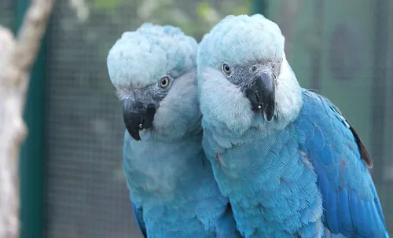
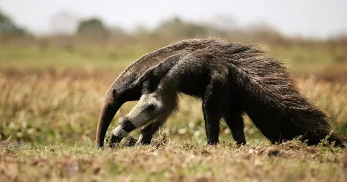
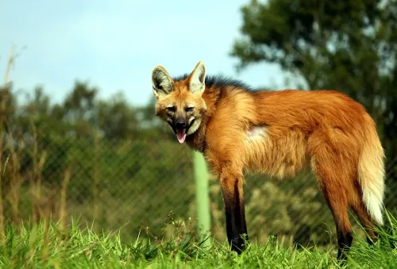

Animais Brasileiros Ameaçados de Extinção

Mico-leão-dourado
Pequeno primata da Mata Atlântica, ameaçado pela destruição de seu habitat.

Onça-pintada
Maior felino das Américas, sofre com caça ilegal e perda de território.

Arara-azul
Ameaçada pelo tráfico de animais e destruição de áreas de nidificação.

Tamanduá-bandeira
Vulnerável devido à expansão agrícola e atropelamentos.

Lobo-guará
Espécie símbolo do Cerrado, ameaçada pela fragmentação do habitat.